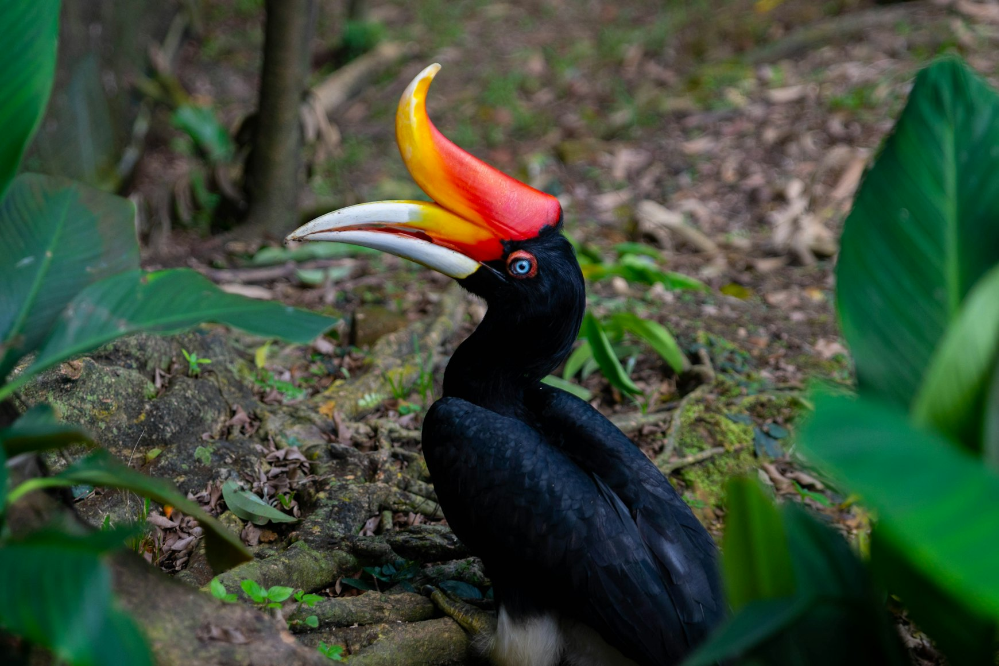
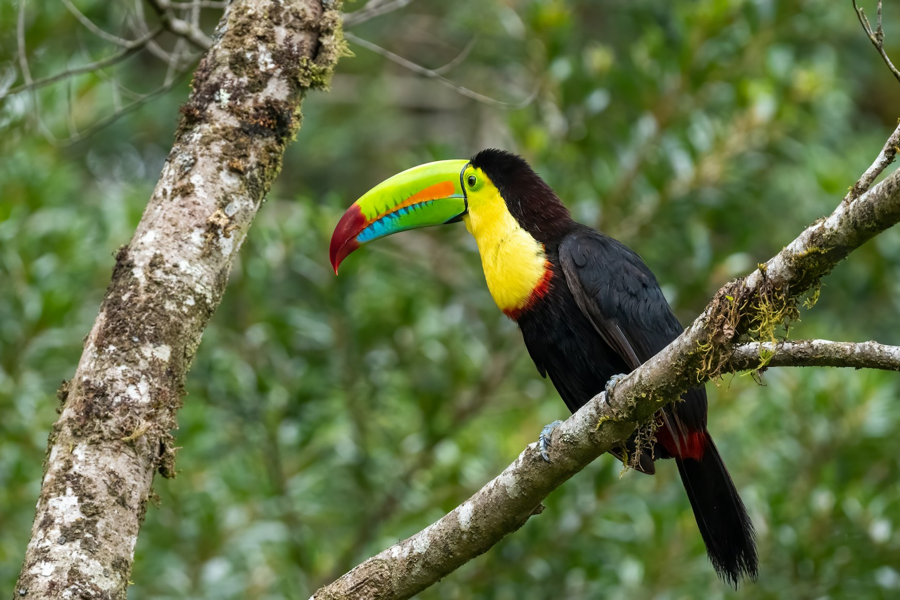
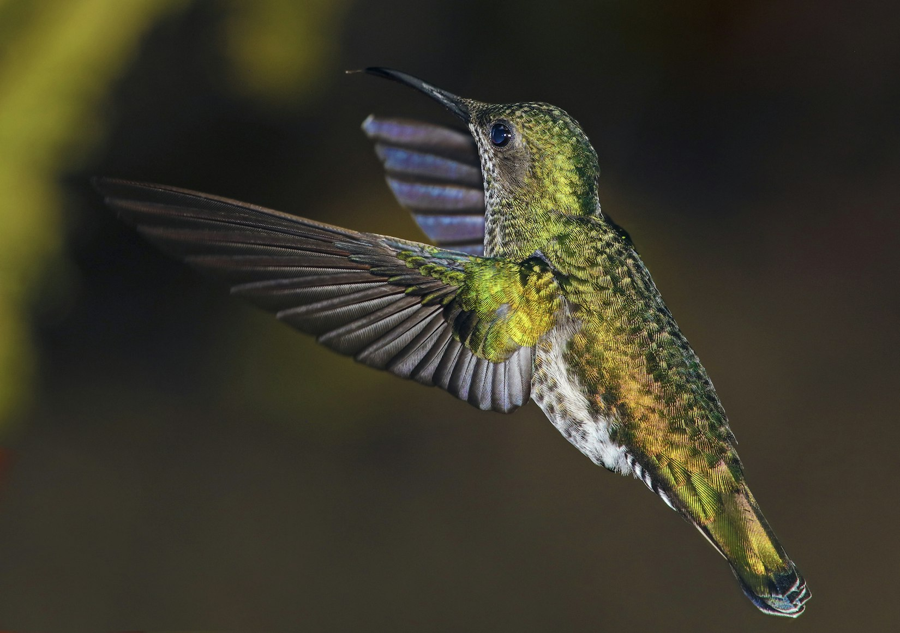
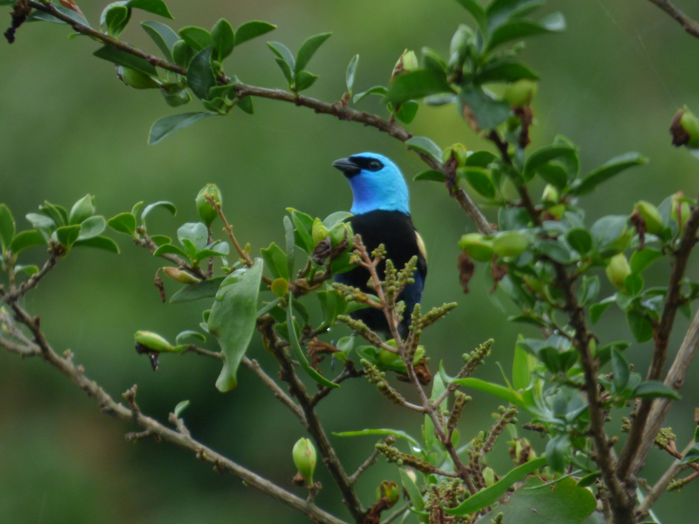
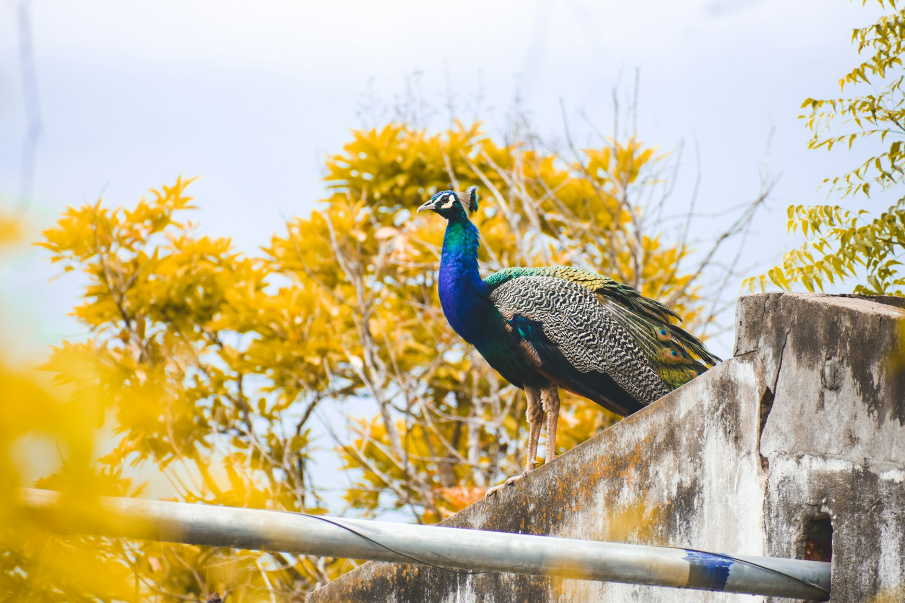
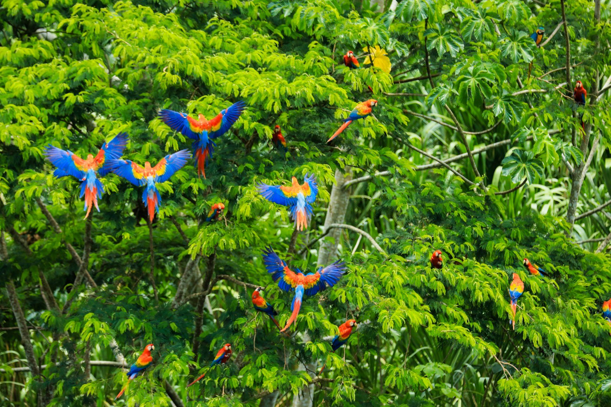

Most people imagine birdwatching incorrectly.
They picture expensive binoculars, notebooks filled with species names, and people standing silently beside tripods from sunrise until afternoon. Real birdwatching travel usually feels very different. At its best, it feels like a deeply restorative nature vacation that slowly changes the way you notice the world around you.
You wake up in a forest lodge because something outside is impossibly loud. Large birds cross the valley while breakfast is still being served. A café terrace suddenly becomes interesting because parrots keep landing in the trees above it. Boat rides turn into hours of watching kingfishers follow the shoreline. Even ordinary walks begin slowing down because movement in the canopy keeps pulling your attention upward.
The best birdwatching trips are not built around rare sightings alone. They work because the entire journey feels good to live inside. Beautiful roads. Humid forests after rain. Long breakfasts with open windows. Mountain air. Mangrove rivers at sunset. Comfortable towns between national parks. The birds become part of the atmosphere rather than isolated attractions.
Some countries are especially good for this kind of travel. They combine visible wildlife, easy logistics, comfortable infrastructure, and landscapes that remain rewarding even when you are not actively searching for birds.
These are the places where a two-week vacation built around nature and birdwatching works exceptionally well.
Thailand: The Most Relaxed Birdwatching Vacation in Asia

Thailand may be the easiest country in the world to combine tropical birdwatching with a genuinely comfortable vacation.
The country already works extremely well for long travel. Transportation is simple. Food is consistently excellent. Accommodation exists at every budget level. Internal flights are cheap, trains are pleasant for slower movement, and national parks are accessible without complicated planning.
What surprises many travellers is how much wildlife still exists between all of that infrastructure.
A two-week birdwatching trip through Thailand often begins in Bangkok, where even urban parks contain surprisingly active birdlife early in the morning. Herons stand beside lakes before commuters arrive. Kingfishers appear around canals. Migratory birds pass through during cooler months.
From there, many travellers continue toward Khao Yai National Park, one of the best places in Asia to observe large hornbills without difficult trekking. Great hornbills move heavily through the canopy, usually in pairs, feeding on fruiting trees throughout the forest. Their wings produce a deep rushing sound loud enough to echo between valleys.
What makes Khao Yai especially pleasant for a vacation is balance. Wildlife observation mixes naturally with scenic drives, cafés, waterfalls, forest lodges, and cooler mountain air compared with Bangkok.
Further south, the atmosphere changes again. Mangrove ecosystems near Krabi and Phang Nga Bay create a completely different style of birdwatching. Brahminy kites circle above fishing boats. White-bellied sea eagles move along limestone cliffs. Shorebirds gather in tidal flats while longtail boats move slowly through mangrove channels.
Thailand works particularly well for travellers who do not want their trip to feel overly specialised. Birdwatching here blends naturally into ordinary travel. One day might involve rainforest trails at sunrise and seafood beside the ocean at sunset. Another might begin with hornbills and end at a night market.
That combination of ease, affordability, and biodiversity is difficult to match anywhere else.
Costa Rica: A Vacation Inside the Rainforest

Some destinations feel designed specifically for nature-focused travel. Costa Rica is one of them.
The country spent decades building tourism around rainforest access, wildlife protection, and eco-lodges integrated directly into forest environments. As a result, even travellers with no previous birdwatching experience often see extraordinary wildlife almost immediately.
You do not need to spend days searching for birds in Costa Rica. They are part of the landscape constantly.
Scarlet macaws fly above Pacific beaches near Manuel Antonio National Park. Toucans appear near lodge terraces during breakfast. Hummingbird feeders attract multiple species simultaneously, creating continuous movement around gardens and balconies.
The cloud forests around Monteverde remain especially famous because of the resplendent quetzal. The bird became almost mythical among travellers long before social media existed. Males develop long emerald tail feathers during breeding season, while their bodies shift between green and crimson depending on how light reaches the feathers through mist and forest canopy.
Costa Rica also works beautifully for travellers who enjoy structure and comfort. Roads are manageable, guided excursions are easy to arrange, and many lodges are specifically designed for wildlife observation. Open-air restaurants, hammocks facing forest valleys, and trails beginning directly beside accommodation make the entire trip feel immersive without becoming physically exhausting.
It is not the cheapest destination in this guide, but for travellers wanting a polished, deeply nature-oriented vacation with consistently high wildlife visibility, Costa Rica remains one of the strongest options in the world.
Ecuador: Cloud Forest Roads and Constant Birdlife

Ecuador feels unusually dense with life.
Within relatively short travel distances, landscapes change from volcanic highlands to cloud forests and then into Amazon rainforest. Every elevation shift changes the birdlife almost immediately.
For travellers, this creates a very satisfying rhythm. Roads become part of the experience because ecosystems continuously transform outside the window.
Most bird-focused trips include several days in Mindo, a small cloud forest town surrounded by hummingbirds, toucans, tanagers, and waterfalls. Many lodges maintain feeders that attract dozens of species throughout the day. Even sitting quietly with coffee often turns into continuous observation.
One of the most unusual birds in Ecuador is the Andean cock-of-the-rock. Males gather in forest clearings where they perform loud competitive displays involving jumps, wing movements, and vocalisations to attract females. Their bright orange plumage looks almost artificial against dark rainforest vegetation.
Further east, travellers can continue toward Amazonian regions where parrots gather at mineral-rich clay cliffs shortly after sunrise.
Ecuador works especially well for travellers wanting a slower, more atmospheric trip. Rain arrives suddenly. Clouds move constantly through valleys. Forests remain wet, loud, and active from morning until evening.
The country encourages lingering rather than rushing.
Colombia: Birdwatching Inside One of the Most Beautiful Landscapes in South America

Colombia contains more bird species than any country on Earth, but numbers alone are not what make it special as a vacation destination.
The real appeal is how dramatically the scenery changes while remaining visually rich almost everywhere.
The coffee region combines green mountain valleys, cooler temperatures, cloud forests, and small towns where birdwatching fits naturally into ordinary travel days. Hummingbirds gather outside cafés and lodges. Toucans and tanagers move through forest edges near hiking trails.
Near Medellín, cloud forests become thicker and wetter. Morning fog hangs low between mountains while mixed flocks of brightly coloured birds move rapidly through moss-covered trees.
Unlike Costa Rica, Colombia still feels slightly less organised around eco-tourism. Roads are slower, distances longer, and travel days sometimes unpredictable. But many travellers end up preferring that atmosphere because the country still feels exploratory rather than overly curated.
A birdwatching vacation in Colombia often feels less like a packaged wildlife trip and more like slowly moving through an enormous living landscape.
India: Birdwatching Woven Into Everyday Life

Birdwatching in India feels fundamentally different from most other destinations because wildlife is rarely separated from ordinary life.
Birds exist everywhere inside the human landscape. Parakeets move through crowded cities. Kites circle above train stations and markets. Wetlands filled with migratory birds appear beside villages and temples.
A two-week trip in India can take very different forms depending on region and season. Some travellers focus on Rajasthan and its wetlands during migration periods. Others combine Kerala’s tropical backwaters with rainforest reserves in the Western Ghats.
Keoladeo National Park remains one of Asia’s most important wetland reserves. During migration season, enormous numbers of waterbirds gather there, including painted storks, pelicans, cranes, and countless smaller species arriving from Central Asia.
India works especially well for travellers who want birdwatching to remain emotionally connected to culture, food, architecture, and ordinary movement through the country rather than isolated nature experiences alone.
Peru: A Jungle Vacation Built Around Rivers and Macaws

The Peruvian Amazon changes the pace of travel completely.
Roads disappear. Rivers become transportation corridors. Humidity reshapes the day. Sound carries differently through dense vegetation, especially before sunrise when parrots and macaws become most active.
The region around Tambopata National Reserve is especially famous for large clay licks where macaws gather during early morning hours. Scarlet macaws, blue-and-yellow macaws, and other parrots descend onto exposed mineral cliffs shortly after dawn, creating one of the loudest wildlife spectacles in South America.
Most travellers stay in jungle lodges accessible only by boat. Days revolve around river movement, forest walks, observation towers, and long humid afternoons where attention naturally shifts toward movement above the canopy.
Unlike fast-paced sightseeing trips, Amazon travel encourages patience. You spend time listening. Watching riverbanks carefully. Noticing sounds becoming gradually recognisable.
For many travellers, that slower rhythm becomes the most memorable part of the entire vacation.
The Best Birdwatching Trips Are About More Than Birds
A successful birdwatching vacation is rarely defined by how many species someone sees.
The trips people remember most clearly are usually the ones where everything surrounding the birdlife also felt good: the landscape, movement between places, weather, food, accommodation, and atmosphere of daily life.
That is why countries like Thailand work so well. Even without birds, the journey itself would still feel enjoyable. The wildlife simply deepens the experience and changes the way travellers interact with the environment around them.
Eventually mornings become slower. Forest sounds become familiar. Movement in trees automatically catches your attention.
And long after the trip ends, many travellers notice something unexpected: they never quite stop looking up afterward.
Continue Reading
The next guide focuses entirely on the easiest and most affordable version of this kind of trip:
Thailand: The Most Budget-Friendly Birdwatching Vacation in Asia
Inside: where to stay near Thailand’s best birdwatching regions; how to see hornbills cheaply without private luxury tours; which national parks work best for beginners; how to combine beaches, cafés, and birdwatching into one balanced trip; and how to build a realistic two-week Thailand route around wildlife and nature.